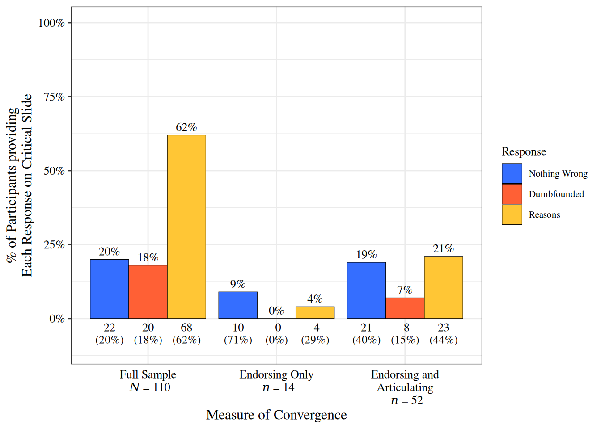
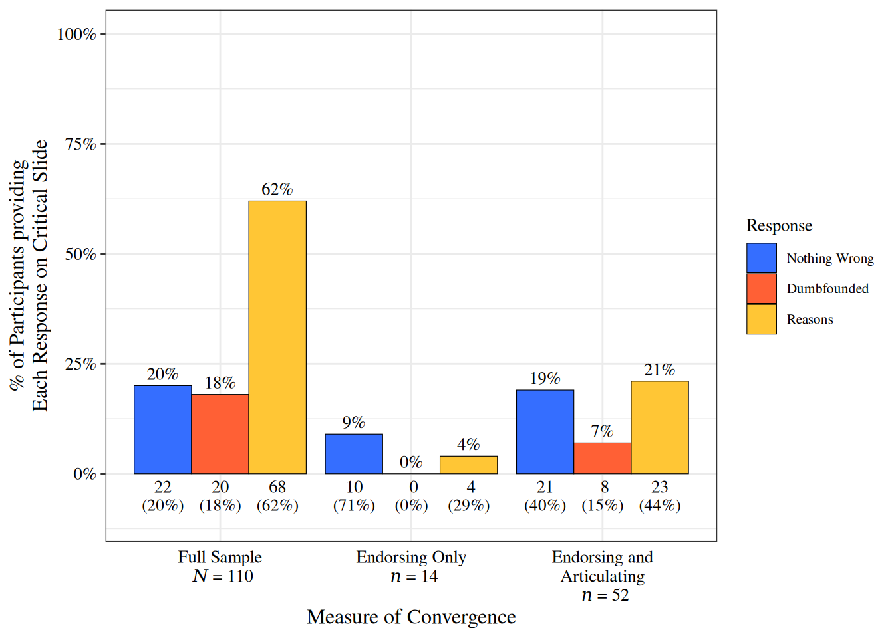
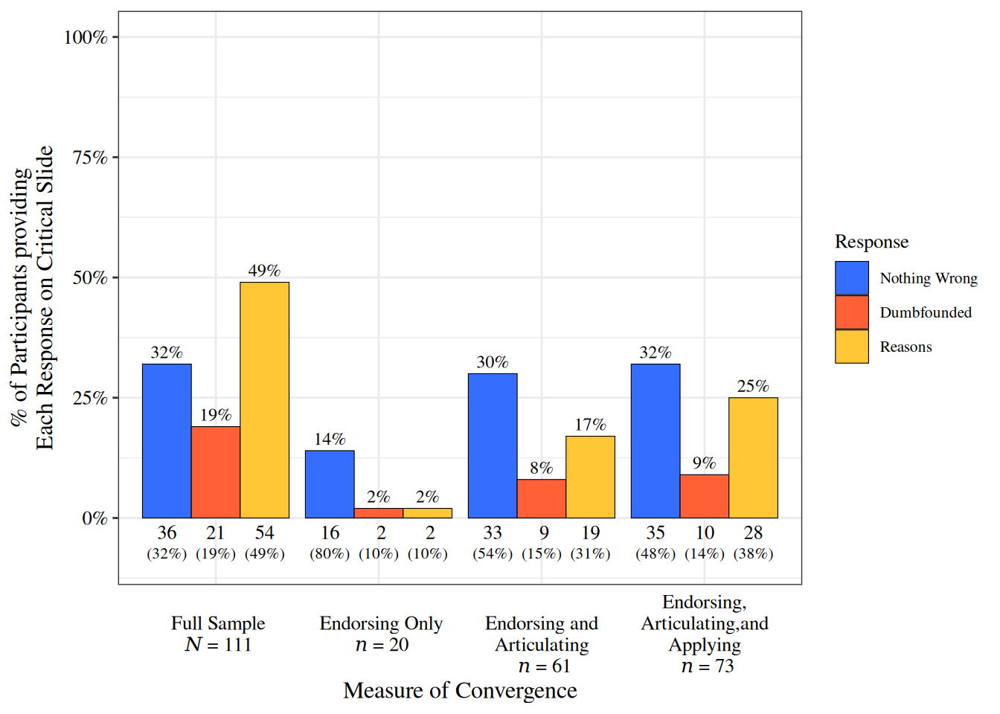
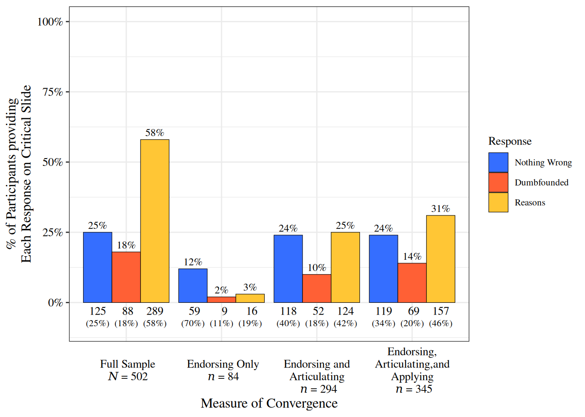
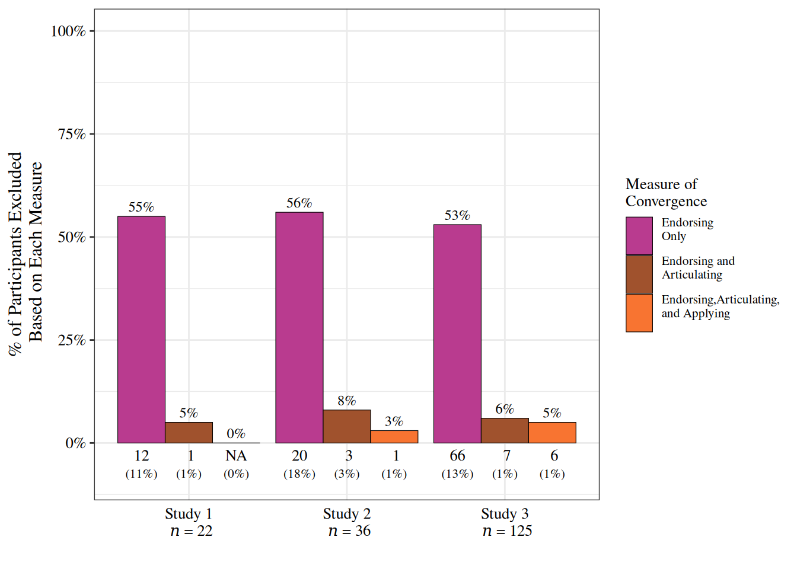

Warning: Using `size` aesthetic for lines was deprecated in ggplot2 3.4.0.
ℹ Please use `linewidth` instead.
Cillian McHugh
July 28, 2020
This post provides a brief overview of a paper where we tested alternative explanations of moral dumbfounding proposed by critics (McHugh et al. 2020).
I’m not sure how I ended up studying moral dumbfounding1, but it has intrigued me since I first read about it in a chapter by Prinz (2005). I admit that the first time I read the scenarios, I found myself dumbfounded. This meant that I was puzzled by critics of the phenomenon arguing that dumbfounding might not be a real phenomenon.
Arguments against the dumbfounding narrative include:
Failure to provide reasons does not mean there are no reasons (Sneddon 2007)
People implicitly perceive harm in ostensibly harmless scenarios (Gray, Schein, and Ward 2014)
People have do have reasons but are “beaten into submission” (Jacobson 2012)
People base their judgements on harm based reasons or norm based reasons (Royzman, Kim, and Leeman 2015)
The strongest challenge to moral dumbfounding came from a set of studies by Royzman, Kim, and Leeman (2015), which tested moral dumbfounding directly, using the Julie and Mark dilemma which reads:
Julie and Mark, who are brother and sister, are travelling together in France. They are both on summer vacation from college. One night they are staying alone in a cabin near the beach. They decide that it would be interesting and fun if they tried making love. At very least it would be a new experience for each of them. Julie was already taking birth control pills, but Mark uses a condom too, just to be safe. They both enjoy it, but they decide not to do it again. They keep that night as a special secret between them, which makes them feel even closer to each other.
Royzman et al. (2015) excluded participants who endorsed either principle from analysis, and found that dumbfounding effectively disappeared.
Participants were presented with the following two questions (emphasis added here):
If participants responded “no” to either question they were excluded from analysis.
Participants were presented with the following two statements and asked to select the one they agrred with most (emphasis added here):
Participants who selected the second statement were excluded from analysis.
Royzman et al. (2015) excluded participants based on their endorsing of either principle. We argue that endorsing provides a poor measure of the degree to which participants judgements can be attributed to a given principle. We propose that if a participant’s judgement is based on a given principle, the participant should be able to articulate the principle independently of a prompt, and they should apply that principle across different contexts. We contcuted 3 studies to address this.
We adopted the same method as Royzman et al. (2015), and excluded participants whose judgements could be attributed to either the harm principle or the norm principle. However rather than relying on endorsing alone, we developed additional, and more rigorous, exclusion criteria. We compared rates of dumbfounding based on these different criteria. We also tested the relative accuracy of the exclusion criteria (based on false exclusions).
First we assessed whether participants articulated either principle. We provided an open-ended response question and asked participants to provide reasons for their judgements. The reasons provided were coded for mention of either principle.
Second we assessed whether participants applied the harm principle across different contexts. We asked participants 3 questions about their judgements of behaviours/activities that could potentially lead to harm2
Across three studies we assessed rates of dumbfounding based on these different exclusion criteria.
Dumbfounding was measured using the critical slide which read as follows:
“Julie and Mark’s actions did not harm anyone or negatively affect anyone. How can there be anything wrong with what they did?”
1. There is nothing wrong
2. It’s wrong but I can’t think of a reason
3. It’s wrong and I can provide a valid reason
(The selecting of option 2, the admission of not having reasons, was taken to be a dumbfounded response)
Study 1 Participants
Study 2 Participants:
Study 3 Participants:
On the graphs below you can see the frequency of each response to the critical slide for each study. The furthest left bars represent the full sample. The responses for each of the sub-samples following the relevant exclusion criterion are displayed and labelled separately.
The response we are intersted in is the red bar denoting a dumbfounded response. Percentages of the full sample are displayed within the plot. Percentages of the relevant sub-samples are displayed in parenthesis below the count.
Warning: Using `size` aesthetic for lines was deprecated in ggplot2 3.4.0.
ℹ Please use `linewidth` instead.


As we can see above, dumbfounded responding is found in the full sample for each study.
Replicating the finding by Royzman et al. (2015), if we exclude participants who endorse either principle, rates of dumbfounding are negligible.
However, if we also account for whether people articulate or apply either principle, dumbfounded responding is observed. So whether or not dumbfounding is real, depends on which exclusion criterion is more accurate.
While we do not have a direct measure of the relative accuracy of the different exclusion criteria, we can assess the relative rates of false exclusions. All exclusions are based on attributing participants’ judgements to either principle. In this case, the judgements should be consistent with the relevant principle. As such, participants who selected “There is nothing wrong” (blue bars above) should not be excluded from analysis. Any participant who selected “There is nothing wrong” and was excluded, was falsely excluded.
Below we have subsetted the participants who selected “There is nothing wrong” across each study, and plot the rates of rates of false exclusion based on each exclusion criterion. The percentage of participants who selected “There is nothing wrong” is displayed within the plot, and the percentage of the full sample is displayed in parenthesis below the count.

As can be seen from the above, rates of false exclusion are much higher when endorsing is the only exclusion criterion. Some false exclusion remains for each of the other exclusion criteria, however it is a considerable improvement. Based on this we conclude that these revised criteria are more robust, and our studies provide evidence that Moral Dumbfounding is indeed real.
Moral dumbfounding cannot easily be explained away by attributing participants’ judgements to endorsed principles. Accounting for whether people articulate or apply these principles provides a more robust measure of inclusion/exclusion. Using this more robust measure, dumbfounded was responding is consistently observed across three studies.
Moral dumbfounding occurs when people stubbornly maintain a moral judgement, even though they can provide no reason to support their judgements (Haidt 2001; Haidt, Björklund, and Murphy 2000; Prinz 2005; McHugh et al. 2017). Dumbfounded responses may include: (a) an admission of not having a reason for a judgement, (b) the use of an unsupported declarations (“It’s just wrong!”) to defend a judgement.↩︎
“How would you rate the behavior of two people who engage in an activity that could potentially result in harmful consequences for either of them?”; “Do you think boxing is wrong?”; “Do you think playing contact team sports (e.g. rugby; ice-hockey; American football) is wrong?”↩︎